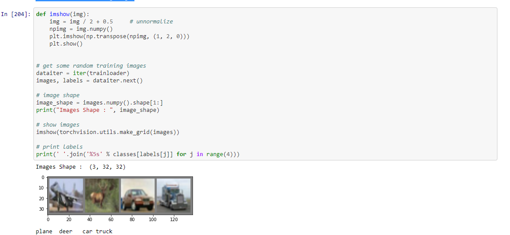
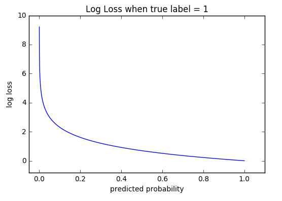
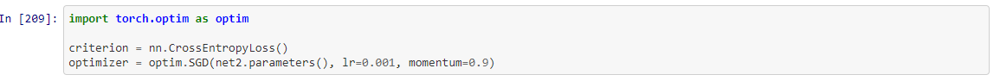

What is CIFAR-10?
The CIFAR-10 dataset (Canadian Institute For Advanced Research) is a collection of images that are commonly used to train machine learning and computer vision algorithms.
It is one of the most widely used datasets for machine learning research.
The CIFAR-10 dataset contains 60,000 32x32 color images in 10 different classes.The 10 different classes represent airplanes, cars, birds, cats, deer, dogs, frogs, horses, ships, and trucks.
There are 6,000 images of each class..From wchich 50,000 data are training data and 10,000 dataset is testing data set

What is CNN
A Convolutional Neural Network (ConvNet/CNN) is a Deep Learning algorithm which can take in an input image, assign importance (learnable weights and biases) to various aspects/objects in the image and be able to differentiate one from the other.
The CNN flows below layout to train the model.
Input > Conv (ReLU) > MaxPool > Conv (ReLU) > MaxPool > FC (ReLU) > FC (ReLU) > > 10 outputs
- Here, Conv is convolutional layer
- RelU is a activation funtion.
- Maxpool is a pooling layer
- FC is a fully connected layer
Training an image classifier
- Load and normalizing the CIFAR10 training and test datasets using torchvision
- Define a Convolutional Neural Network
- Define a loss function
- Train the network on the training data
- Test the network on the test data
Loading and normalizing CIFAR10
Visualize 4 Random Training Images

Define a Convolutional Neural Network
What is Activation Function?
The activation function is a node that is put at the end of or in between Neural Networks. They help to decide if the neuron would fire or not. “The activation function is the non linear transformation that we do over the input signal. This transformed output is then sent to the next layer of neurons as input.
Example of activation function.
- Sigmoid Function
- Softmax Function
- Rectified Linear Unit (ReLU) Function
- Exponential Linea
r Units (ELUs) FunctionHere I have created 2 layer, 3 layer and 4 layer network topology in order to get maximum accuracy.
Network training topology for 2 layers CNN.
I have used RelU activation function.
What is ReLU Function?
ReLu refers to the Rectifier Unit, the most commonly deployed activation function for the outputs of the CNN neurons. Mathematically, it's described as: Unfortunately, the ReLu function is not differentiable at the origin, which makes it hard to use with backpropagation training
Range: [ 0 to infinity)
What is Fully connected layer?
Fully Connected layers in a neural networks are those layers where all the inputs from one layer are connected to every activation unit of the next layer. In most popular machine learning models, the last few layers are full connected layers which compiles the data extracted by previous layers to form the final output. It is the second most time consuming layer second to Convolution Layer.
What is Pooling layer?
A pooling layer is another building block of a CNN.
Its function is to progressively reduce the spatial size of the representation to reduce the amount of parameters and computation in the network. Pooling layer operates on each feature map independently.
The most common approach used in pooling is max pooling.
Here I have created 2 layer, 3 layer and 4 layer network topology in order to get maximum accuracy.
Network training topology for 2 layers CNN.
Network training topology for 3 layer CNN.
Network training topology for 4 layer CNN.
Define a Loss function and optimizer
For this model I have used Cross-Entorpy loss function Since I am classifying images into more than two classes we will use cross-entropy as a loss function. To optimize the network I will employ stochastic gradient descent (SGD) with momentum .
What is Loss Function?
The Loss Function is one of the important components of Neural Networks. Loss is nothing but a prediction error of Neural Net. And the method to calculate the loss is called Loss Function. In simple words, the Loss is used to calculate the gradients. And gradients are used to update the weights of the Neural Net.
Different Loss Functions.
- Binary Cross Entropy Loss — torch.nn.BCELoss()
- Binary Cross Entropy with Logits Loss — torch.nn.BCEWithLogitsLoss()
- Negative Log Likelihood — torch.nn.NLLLoss()
- CrossEntropyLoss — torch.nn.CrossEntropyLoss() - Most Common
cross-Entropy Loss
Cross-entropy loss, or log loss, measures the performance of a classification model whose output is a probability value between 0 and 1. Cross-entropy loss increases as the predicted probability diverges from the actual label. So predicting a probability of .012 when the actual observation label is 1 would be bad and result in a high loss value. A perfect model would have a log loss of 0.

What is SGD?
Stochastic gradient descent (often abbreviated SGD) is an iterative method for optimizing an objective function with suitable smoothness properties (e.g. differentiable or subdifferentiable). It can be regarded as a stochastic approximation of gradient descent optimization, since it replaces the actual gradient (calculated from the entire data set) by an estimate thereof (calculated from a randomly selected subset of the data). Especially in high-dimensional optimization problems this reduces the computational burden, achieving faster iterations in trade for a lower convergence rate.
Different optimizer:
- torch.optim.Adagrad
- torch.optim.Adam
- torch.optim.Adamax
- torch.optim.ASGD
- torch.optim.LBFGS
- torch.optim.RMSProp
- torch.optim.Rprop
- torch.optim.SGD
For this model I have used Cross-Entorpy loss function Since I am classifying images into more than two classes we will use cross-entropy as a loss function. To optimize the network I will employ stochastic gradient descent (SGD) with momentum .
Train the network
I have used SGD optimizer to tain 2 layer CNN.


Train the netwok for 3 layer topology(Adam Optimizer)
Train the netwok for 4 layer topology
Test the network on the test data
Now let see Accuracy for each network topology
Accuracy of 2 layer netwok topology:(SGD)

Now let's see what are the classes performed with highest accuracy for 2 layer:

Accuracy of 3 layer netwok topology:(Adam)
Now let's see what are the classes performed with highest accuracy for 3 layer:
Accuracy of 4 layer netwok topology:(SGD)
Now let's see what are the classes performed with highest accuracy for 3 layer:
Bar graph for Accuracy performance of different layers
References
- https://pytorch.org/tutorials/beginner/blitz/cifar10_tutorial.html
- Optimizer:r[https://towardsdatascience.com/optimizers-for-training-neural-network-59450d71caf6#:~:text=Optimizers%20are%20algorithms%20or%20methods,order%20to%20reduce%20the%20losses.&text=Optimization%20algorithms%20or%20strategies%20are,the%20most%20accurate%20results%20possible.]
- Conv2d[https://pytorch.org/docs/stable/generated/torch.nn.Conv2d.html]
- Pooling Layer[https://www.geeksforgeeks.org/cnn-introduction-to-pooling-layer/]
- Fully connected layers[https://towardsdatascience.com/convolutional-neural-network-17fb77e76c05]
- https://medium.com/swlh/image-classification-with-cnn-4f2a501faadb
- https://www.stefanfiott.com/machine-learning/cifar-10-classifier-using-cnn-in-pytorch/
- https://towardsdatascience.com/pytorch-basics-how-to-train-your-neural-net-intro-to-cnn-26a14c2ea29